一、Nginx负载均衡
1、示意图
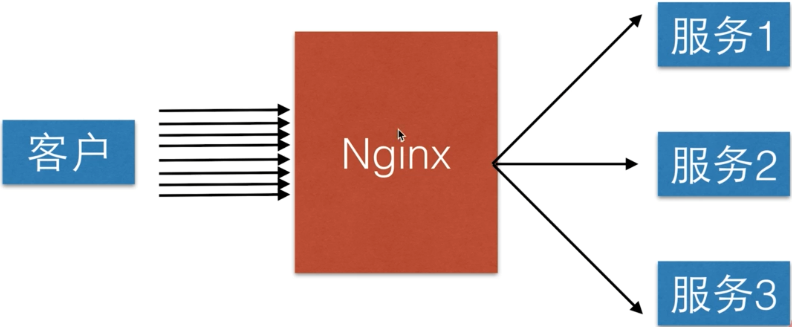2、好处
均摊请求，让服务端整体吞吐率提高，满足不断增长的业务需求。
相比于单点服务，当其中一台服务器挂掉后，还可以继续让剩下的服务器继续服务，提高了容灾性。
二、负载均衡的分类
1、GSLB（全局负载均衡）
一般是以国家或省为单位进行全局负载的。
示意图如下：
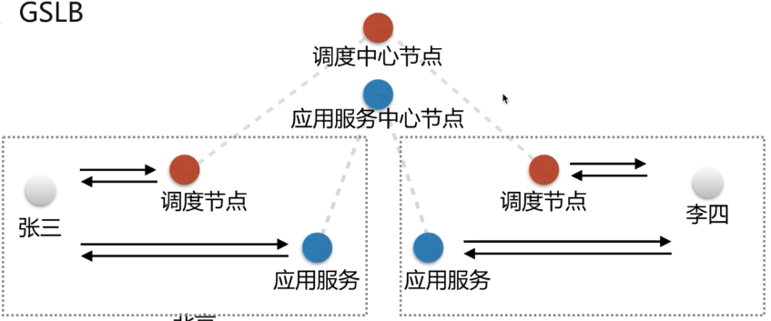2、SLB
示意图：
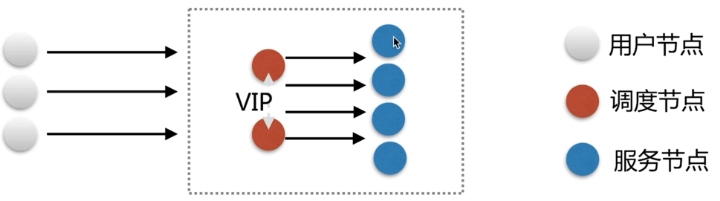三、基于LVS的中间件架构
LVS（Linux Virtual Server ）Linux 虚拟服务器
1、四层负载均衡
即在OSI七层模型中的传输层。因为第四层支持TCP/IP协议。四层负载均衡只需要对客户端的请求进行TCP/IP协议的包转发就能实现负载均衡。
优势
非常快，只需要最底层进行应用处理，不需要进行一些复杂的逻辑，值需要负责包的转发即可。
示意图
2、七层负载均衡
因为是在应用层，因此可以完成很多应用方面的协议请求，比如HTTP协议的负载均衡可以实现HTTP信息的改写，头信息的改写，安全应用规则的控制，转发，rewrite等等方面的规则控制。因此在七层负载均衡里面可以做的事情就更多一些，Nginx就是一个典型的七层负载均衡的SLB。
SLB（Server Load Balancing）服务器负载均衡。
示意图
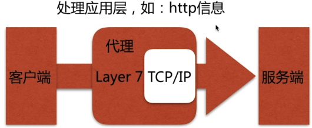Nginx负载均衡实现原理
通过 proxy_pass 转发到后端的服务器上，只是不是转发到一台，而是一组虚拟的服务池（即 upstream server）。在upstream 组里面实现了对于多台服务器请求的不断轮询。
当用户的请求过来后，就会通过 upstream_module 这个模块将用户的请求分发到不同的服务上，从而实现负载均衡。
故 proxy_pass 和 upstream 是两个核心的配置。
示意图
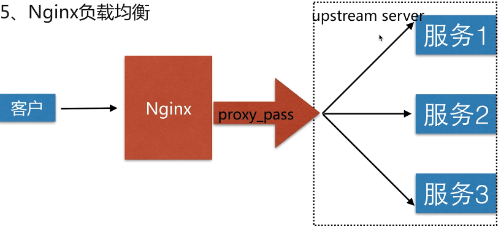配置语法
ngx_http_upstream_module官方文档 ： http://nginx.org/en/docs/http/ngx_http_upstream_module.html
1 | Syntax: upstream name { ... } |
示例：
a、用一台服务器来实现负载均衡，配置如下：
1 | upstream chrdai { |
b、 另外三台真实服务器的配置如下：
我这里是通过同一台服务器的不同端口模拟的。
第一台（/etc/nginx/conf.d/realserver1.conf）：
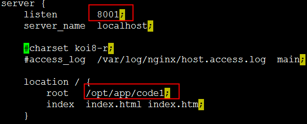第二台（/etc/nginx/conf.d/realserver2.conf）：
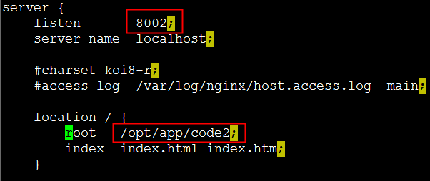第三台（/etc/nginx/conf.d/realserver3.conf）：
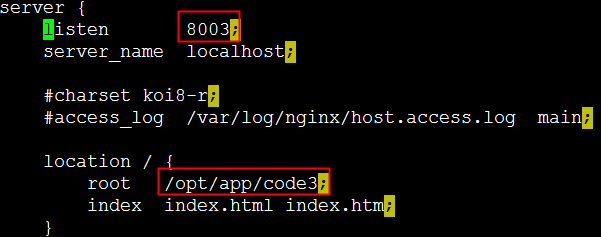c、分别在三台真实服务器（当然我这里是在一台服务器中用三个端口模拟的）的项目目录下建立index.html文件。
第一台（/opt/app/code1）：
1 |
|
第二台（/opt/app/code2）：
1 |
|
第三台（/opt/app/code3）：
1 |
|
c、刷新页面，发现页面可以在三个站点间轮询显示。‘
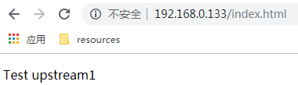 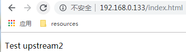 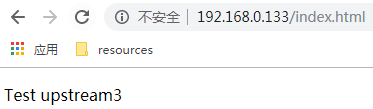说明我们的负载均衡配置成功。
注意：upstream只能配置在 http 这一层，即 server 层的外面。
下面我们来模拟其中一台服务器挂掉后，负载均衡是如何工作的。
如果是真实服务器，可以将nginx进程kill掉，但是由于我这里是在同一台服务器下面的三个端口来模拟的，所以不能直接kill掉Nginx进程。
我这里通过在 iptables 中添加一条规则来将所有来自 8002 端口的请求都 drop 掉，即不在对外提供 8002 端口的服务。
1 | iptables -I INPUT -p tcp --dport 8002 -j DROP |
此时我们在来访问页面，发现只会显示 upstream1 和 upstream3，upstream2已经被略过了。

说明当我们的负载均衡发现如果有一台服务器挂掉后，会自动略过这台服务器。打他提高了容灾性。
四、负载均衡调度中的状态
| 状态 | 说明 |
|---|---|
| down | 当前的server暂时不参与负载均衡 |
| backup | 预留的备份服务器 |
| max_fails | 允许请求失败的次数 |
| fail_timeout | 经过max_fails失败后，服务暂停的时间（默认是10秒） |
| max_conns | 限制最大的接收连接数 |
max_conns的应用场景是，当我们把两个不同配置的服务器加在了同一个upstream下时，比如一个是四核，一个是8核的服务器，总不能让两台服务器承受相同的请求连接数吧，默认的轮询策略会均匀分配，这时我们就可以通过这个参数来限制后端服务最大的请求数。
示例：
1 | upstream chrdai { |
此时我们在访问，发现只有8003 在提供服务。
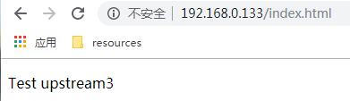下面我们用iptables规则来限制来自8003的请求，看8002能否从备份状态恢复为提供服务状态。
1 | iptables -I INPUT -p tcp --dport 8003 -j DROP |
服务端经过一段时间的尝试，发现8003挂了，果然将8002转正了。
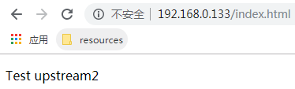我们再次刷新页面，在8003没有恢复之前，都是访问的8002。
下面我们来将8003的服务恢复过来。
1 | iptables -F |
再次刷新页面，发现又是由8003来提供服务了，8002继续轮为备胎。
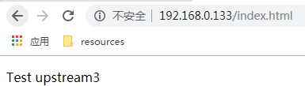结论：
- 当我们负载均衡中其中一台服务器挂掉后，会略过该服务器，剩下的服务器继续提供服务。
- 当所有的主服务器都挂掉后，备用服务器会转正。
- 当主服务器恢复后，继续由主服务器提供服务，备用服务器继续轮为备胎。
五、Nginx的调度算法
调度算法
| 调度算法名称 | 说明 |
|---|---|
| 轮询 | 按时间顺序逐一分配到不同的后端服务器 |
| 加权轮询 | weight值越大，分配到的访问几率越高 |
| ip_hash | 每个请求按访问IP的的hash结果分配，这样来自同一个IP的固定访问一个后端服务器 |
| url_hash | 按照访问的url的hash结果来分配请求，使每个url定向到同一个后端服务器 |
| least_conn | 最少链接数，哪个机器连接数少，就分给哪个机器 |
| hash关键数值 | hash自定义的key |
1、加权轮询示例：
1 | upstream chrdai { |
2、ip_has策略示例：
1 | upstream chrdai { |
服务器会根据 REMOTE_ADDR 做hash，同一个ip的请求，不管请求多少次，都会请求相同的一台服务器。
它的缺点是，如果中间有一层代理，那么取到的就不是客户端真实的ip，这样就无法基于用户真实的ip来做轮询了。而会跟代理服务器的ip来固定走一台服务器。
如果按照ip来分配，往往取不到用户端真实的ip。还有一个问题就是当服务端使用了缓存，假如一个用户先访问了服务器1，服务器1缓存了一部分资源，下一次访问的时候被轮询到了服务器2，那么上一次的缓存就无效了，Nginx又增加了更加友好的hash策略。
3、hash关键数值轮询策略
配置语法：
1 | //version>1.7.2Syntax：hash key [consistent]; |
4、url_hash 示例：
1 | upstream chrdai { |
在 /opt/app/cod1 目录下新建三个文件。
url1.html
1 |
|
url2.html
1 |
|
url3.html
1 |
|
/opt/app/code2 和 /opt/app/code3 目录下也创建三个 urlx.html，页面内容和上面同理，修改一下 server的值和url的值即可。
此时由于我们的hash策略是根据 reques_uri 来的，所以会有如下结果。
a、当我们访问 http://192.168.0.133/url1.html 时，由于一开始就进入了 server1 这台服务器，不管怎么刷新，以后也永远进入server1这台服务器，因为它是根据 request_uri来做的hash。
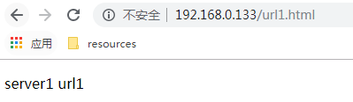b、当我们访问 http://192.168.0.133/url2.html 时，由于一开始就进入了 server3 这台服务器，不管怎么刷新，以后也永远进入server3这台服务器。
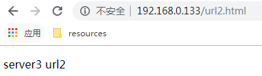c、当我们访问 http://192.168.0.133/url3.html 时，由于一开始就进入了 server2 这台服务器，不管怎么刷新，以后也永远进入server3这台服务器。
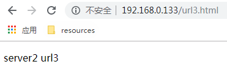总结：
- 加权轮询和轮询都是基于请求来进行分配的。
- ip_hash策略，当中间有代理服务或者有设置缓存都有一定的局限性。
- 通常使用自定义的 url_hash策略来控制轮询。
- 当加权轮询策略和ip_hash 或者 url_hash 策略混用的时候，因为weight控制的是轮询策略下的权重，ip_hash是根据请求来源的ip加入轮询的算法。所以用了ip_hash或者url_hash的策略，就不需要添加weight的参数了。
本文为袋鼠学习中的总结，如有转载请注明出处：https://www.cnblogs.com/chrdai/protected/p/11397397.html